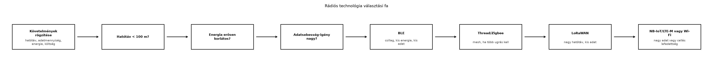

A TerraSense csomópont tervezésekor el kell dönteni, hogyan jut el a
szenzoradat a gatewayhez. A követelménytáblázat szerint a
ts-node 10 percenként küld legfeljebb 200 B
CBOR-telemetriát, legalább 12 hónapig kell elemből működnie, és a
csomópontok egy üvegházon belül, tipikusan 10–50 m-re helyezkednek el a
ts-gw-től. Emellett a csomópontnak helyben kell észlelnie a
kritikus riasztási feltételeket, ezért az idő kritikus adatoknál
alacsony késleltetéssel kell továbbítania. Ha rossz rádiós technológiát
választunk, az elem hetek alatt lemerül, vagy a gateway nem kapja meg az
üzeneteket. Ezért ebben az alfejezetben a leggyakoribb IoT-rádiós
technológiákat vetjük össze, és kialakítunk egy ismételhető választási
módszert.
Az IoT-rádiós technológiák két nagy csoportba sorolhatók a felhasznált spektrum alapján:
A technológiaválasztást leggyakrabban három, egymással versengő paraméter feszíti: a hatótáv, az adatsebesség és az energiafogyasztás. Ezt nevezzük hatótáv–adatsebesség–energia háromszögnek.
Definíció (hatótáv–adatsebesség–energia háromszög). Egy rádiós technológia fizikai jellemzői közül a nagy hatótáv általában alacsonyabb adatsebességet vagy nagyobb adási energiát követel; a nagy adatsebesség általában nagyobb energiafelvételt és rövidebb hatótávot eredményez. Az IoT-eszközök tervezésekor ezt a három dimenziót együtt kell optimalizálni a költség és a rendelkezésre álló spektrum figyelembevételével.
A TerraSense-eszköz energiamodelljében az adási idő közvetlenül befolyásolja az átlagáramot, hiszen az adási állapot árama általában 10–100-szorosa az alvási állapoténak. Minél nagyobb az adatsebesség, annál rövidebb az adási idő, de a nagyobb sebességű rádiók gyakran magasabb csúcsáramot és bonyolultabb modulációt használnak, ami önmagában növeli a fogyasztást. Ezért az optimális választás nem mindig a leggyorsabb technológia.
Az alábbi táblázat a leggyakoribb IoT-rádiós technológiákat hasonlítja össze nagyságrendi értékekkel. Az adatok tipikus értékek, és a konkrét implementáció, környezet és szabályozási tartomány szerint jelentősen eltérhetnek; a konkrét értékeket mindig a kiválasztott chip adatlapjából kell ellenőrizni.
| Technológia | Sáv | Adatsebesség | Hatótáv | Energiaigény | Topológia | Költség |
|---|---|---|---|---|---|---|
| Wi-Fi (802.11n/ac) | 2,4/5 GHz | 10–100 Mbit/s | 30–100 m | nagyon magas | csillag | közepes |
| BLE (Bluetooth 5) | 2,4 GHz | 125–2000 kbit/s | 10–100 m | alacsony | csillag, hirdetés | alacsony |
| Zigbee | 2,4 GHz / 868 MHz | 20–250 kbit/s | 10–100 m | alacsony | mesh | alacsony |
| Thread (802.15.4) | 2,4 GHz | 250 kbit/s | 10–100 m | alacsony | mesh, IPv6 | alacsony |
| LoRaWAN | 868/915 MHz | 0,3–50 kbit/s | 1–15 km | nagyon alacsony | csillag (gateway) | alacsony |
| NB-IoT / LTE-M | licencelt | 20–1000 kbit/s | 1–10 km (cellás lefedettség) | alacsony | csillag (bázisállomás) | közepes, havidíj |
A táblázatból jól látszik a háromszög: - A Wi-Fi nagy adatsebességet ad, de az energiaigénye miatt elemes IoT-csomóponthoz ritkán alkalmas. - A BLE és a Thread/Zigbee hasonló sávban, hasonló hatótávval működik, de a BLE egyszerűbb csillagtopológiát, a Thread/Zigbee mesh-hálózatot ad. - A LoRaWAN nagy hatótávú, de adatsebessége erősen korlátozott, ezért kis üzenetek ritka küldésére való. - Az NB-IoT és az LTE-M mobilszolgáltatói hálózaton működik, ami nagy lefedettséget ad, de a SIM-kezelés és a szolgáltatói költségek miatt nagyobb flottánál jelentős tétel.
A megfelelő technológiát a követelményekből kiindulva, négy fő kérdéssel választjuk ki:
Mekkora a szükséges hatótáv és a telepítési környezet? Ha a csomópontok és a gateway ugyanabban az épületben vagy közvetlenül egymás mellett vannak, a rövid hatótávú technológiák elegendők. Ha több kilométeres, nehezen elérhető területet kell lefedni, LoRaWAN vagy cellás technológia kell.
Mennyi az adatmennyiség és a küldési gyakoriság? A ritka, kis üzenetek (például 10 percenként 200 B) jól illenek a keskenysávú, alacsony sebességű technológiákhoz. A nagyobb adatmennyiség (például firmware-frissítés, képátvitel) nagyobb sávszélességet igényel, ami általában nagyobb energiafogyasztással jár.
Mennyire szigorú az energia- és költségkorlát? Elemes eszköznél a csúcsáram, az adási idő és az alvó üzemmód energiaigénye dominál. Hálózatról táplált eszköznél a fogyasztás kevésbé fontos, a sávszélesség és a késleltetés előbbre sorolható.
Milyen topológiát és hálózatkezelést tudunk vállalni? A csillagtopológia egyszerűbb, de a gateway hatótávolsága korlátozott. A mesh-hálózat nagyobb területet fed le, de több eszközön kell fenntartani az útvonalakat, ami növeli a firmware-bonyolultságot és az energiafogyasztást.
Ezen kívül figyelembe kell venni a szabályozási és tanúsítási követelményeket (például az EU-ban a rádiós eszközök RED-engedélyezése) és azt is, hogy a licencelt sávos technológiák hálózati lefedettsége földrajzilag korlátozott lehet.
Tegyük fel, hogy a ts-node egy 200 B hasznos terhet
(payload) küld CBOR formátumban. A rádiókeret tartalmaz
protokollfejlécet, címzést, keretellenőrző összeget és esetleges
biztonsági mezőket. Tegyük fel, hogy a teljes keretméret
.
A példában használjunk LoRaWAN-hoz tartozó adatsebességet:
(ez a LoRaWAN közepes adatsebessége; valós érték függ a szórási
tényezőtől és a sávszélességtől).
Az adási idő (amíg a rádió ténylegesen sugároz) képlete:
Ha ugyanezt BLE 2 Mbit/s-os fizikai sebességgel küldenénk, és a keretméret az eltérő fejlécek miatt lenne, akkor:
Ez jól mutatja, hogy a BLE adási ideje sokkal rövidebb, de a LoRaWAN nagyobb hatótávot ad. Az energiafogyasztás az adási állapot áramából és az adási időből számolható:
Tegyük fel, hogy a LoRaWAN rádió adási csúcsárama és a tápfeszültség . Ekkor egy adás energiája:
Ha a ts-node 10 percenként
()
küld, az adás átlagáram-hozzájárulása:
Ez a számítás illeszkedik az Energiamodell és az elemélettartam kiszámítása alfejezetben bemutatott duty-cycle modellhez: a rádiós állapot árama és időtartama az egyik összetevője az átlagáramnak. Az illusztratív értékekből is látszik, hogy a ritka küldésnél az alvó állapot dominál, ezért a technológiaválasztásnál nem csak az adási energia, hanem az alvó üzemmód és a felébredés költsége is döntő.
A választási módszert az alábbi folyamatábra foglalja össze. A folyamatot a TerraSense kontextusában is végigvezetjük, de a logika általános.

A fa használata:
Először a hatótávot vizsgáljuk. Ha az eszközök egy épületen belül, 100 m-en belül vannak, akkor a rövid hatótávú technológiák jönnek szóba; ha ennél nagyobb területet kell lefedni, akkor LoRaWAN vagy cellás technológia szükséges.
Ha a hatótáv rövid, akkor az energia korlátosságát nézzük. Elemes eszközöknél a BLE vagy a Thread/Zigbee jöhet szóba; hálózatról táplált eszköznél a Wi-Fi is választható.
Rövid hatótáv és szigorú energiakorlát esetén a mesh-topológia szükségessége dönt: ha egyetlen gateway lefedi a területet, a BLE csillagtopológia egyszerűbb és energiatakarékosabb; ha több ugrás kell, a Thread vagy a Zigbee mesh-hálózatot ad.
Nagy hatótáv esetén az adatmennyiség és a lefedettség dönt: kis, ritka üzenetekhez LoRaWAN illik; nagyobb adatmennyiséghez vagy meglévő cellás lefedettséghez NB-IoT/LTE-M.
A TerraSense-ben a csomópontok és a gateway közötti szakaszra egyértelműen a BLE a legjobb választás. Az indoklás:
ts-gw jellemzően 10–50 m-re vannak, amit a BLE 5 hirdetési
vagy kapcsolati üzemmódja kényelmesen lefed.ts-node elemes, és a 10
perces ciklusú telemetria kis adatmennyisége miatt a BLE alacsony
csúcsárama és nagyon rövid adási ideje kedvező. A BLE hirdetési
üzemmódban nincs is szükség kapcsolatfelépítésre, ami tovább csökkenti
az energiafogyasztást.A döntési fában ez az „energia erősen korlátos” és „mesh nem szükséges” ágon a BLE-t jelenti.
Opcionálisan, ha a TerraSense-t több, egymástól távoli üvegházból álló telepre kellene kiterjeszteni, egy LoRaWAN gateway is bevezethető lenne. Ebben az esetben a csomópontok egy része LoRaWAN-rádióval küldene a telepi gatewayhez, a BLE pedig a helyi, rövid hatótávú kommunikációra maradna. Ezt a lehetőséget a LoRaWAN: nagy hatótáv kis energiával alfejezet vizsgálja.
Továbbvitt eredmény. A fenti döntési fa és a négy fő szempont (hatótáv, adatmennyiség, energiakorlát, topológia) a TerraSense választási módszere. Ezt a módszert használja a Bluetooth Low Energy: hirdetés, GATT, kapcsolatok, a LoRaWAN: nagy hatótáv kis energiával és az IP az eszközön: IPv6, 6LoWPAN, Thread és a Zephyr hálózati stack alfejezet, amikor az egyes technológiák részleteit dolgozza ki. A TerraSense fő csomópont–gateway szakaszára a BLE-t választottuk; a konkrét BLE-hirdetési séma és GATT-elrendezés a Bluetooth Low Energy: hirdetés, GATT, kapcsolatok alfejezetben készül el.
A rádiós technológia kiválasztása után az igazi ellenőrzés a valós
környezetben végzett hatótáv- és energiafogyasztás-mérés. A
native_sim rádiós rétege nem reprezentálja a valódi rádiós
viselkedést, ezért a méréseket mindig a kiválasztott fejlesztőkártyán, a
tervezett antennával kell elvégezni.
| Tünet | Lehetséges ok | Javítás |
|---|---|---|
| A gateway nem kapja az üzeneteket | Rossz technológiaválasztás, hatótávon kívüli csomópont | Hatótáv-ellenőrzés, nyereségesebb antenna, mesh vagy más technológia |
| Az elem hetek alatt lemerül | Túl gyakori adás, nagy csúcsáramú rádió | Csökkenteni a küldési gyakoriságot, kisebb adatsebességgel rövidebb felébredést, alvó üzemmód optimalizálása |
| Nagy késleltetés a riasztásnál | A technológia nagy átviteli késleltetést okoz | BLE vagy Thread a kritikus útra, az alvó ciklus lerövidítése |
| Zavart a 2,4 GHz-es sávban | Wi-Fi, BLE, Zigbee együtt fut | Csatornaválasztás, frekvenciaugrás, LoRaWAN 868 MHz-en |
A mérési jegyzőkönyvben rögzíteni kell a környezetet (falak, távolság, interferencia), a rádió beállításait (teljesítmény, adatsebesség, csatorna) és a mért RSSI vagy csomagvesztési arányt. Ez alapján lehet a hatótávra és az energiafogyasztásra vonatkozó követelményeket igazolni.
„A nagyobb adatsebesség mindig energiatakarékosabb.” Bár a nagyobb sebesség rövidebb adási időt ad, a nagyobb sebességű rádiómoduláció gyakran magasabb csúcsáramot és bonyolultabb jelfeldolgozást igényel, ami az összenergiát növelheti. A teljes energiamérleget a chip adatlapjából kell kiszámítani.
„A licenc nélküli sáv mindig olcsóbb.” A licenc nélküli sávban nincs spektrumdíj, de a zavartűrés miatt több újraküldésre lehet szükség, ami növeli az energiafogyasztást és a késleltetést. A licencelt sáv havidíja egy prediktív, garantáltabb szolgáltatást fedezhet.
„A mesh-hálózat mindenre jobb.” A mesh megnöveli a lefedettséget, de több eszköznek kell ébren maradnia az útvonalak fenntartásához, ami növeli a teljes hálózat energiafogyasztását és a firmware-bonyolultságot. Csillagtopológiával is lefedhető területen a mesh felesleges.
„A hatótáv adatlapértéke laboratóriumi körülményekre vonatkozik.” A valós beltéri hatótáv a falak, az emberek és az interferencia miatt a gyártói érték töredéke is lehet. A tervezéskor mindig valós környezetben kell mérni.
Fogalmi kérdés: Magyarázd el a hatótáv–adatsebesség–energia háromszöget egy konkrét példán. Miért nem lehet egyszerre nagy hatótáv, nagy adatsebesség és alacsony energiafogyasztás?
Számítási feladat: Egy LoRaWAN eszköz 20 B hasznos terhet küld 0,98 kbit/s effektív adatsebességgel. A teljes keretméret 28 B. Számítsd ki az adási időt és az adási energiát, ha a rádió csúcsárama 120 mA 3,3 V-on. Mennyi az adás átlagáram-hozzájárulása, ha az eszköz 15 percenként küld?
Implementációs feladat a TerraSense-ben: A ts-node
BLE-hirdetési és LoRaWAN opciójához készíts egy egyszerű döntési
táblázatot a ~/iot-labor/i021/radio-selection.md fájlban,
amely a TerraSense követelményeihez (10 perc ciklus, 200 B, 12 hó elem,
50 m hatótáv) hozzárendeli a választott technológiát és az indoklást. A
táblázat a későbbi laborok bemenetéül szolgál.
Hibakeresési feladat: Egy üvegházban a ts-node-ok
BLE-hirdetéseit a ts-gw csak a hirdetések 30%-ában látja.
Sorold fel a lehetséges okokat, és adj mindegyikhez javítási javaslatot.
Milyen mérésekkel igazolnád a javítást?
A háromszög fizikai kompromisszumot fejez ki. A nagy hatótávhoz több adási energiát vagy érzékenyebb, kisebb adatsebességű modulációt kell használni. A nagy adatsebesség több spektrumot igényel, és a rádió jelfeldolgozó áramkörei nagyobb csúcsáramot vesznek fel. Az alacsony energiafogyasztás rövid adási időt vagy alacsony csúcsáramot kíván, ami korlátozza a hatótávot vagy a sebességet. Például a LoRaWAN nagy hatótávja alacsony adatsebességen valósul meg, míg a Wi-Fi nagy sebessége rövid hatótávon, hálózati tápellátással működik.
A keretméret , az adatsebesség . Adási idő:
Energia:
A periódus , így az átlagáram-hozzájárulás:
# TerraSense rádiós választás
| Követelmény | Érték | Döntés |
|---|---|---|
| Hatótáv | 50 m beltér, üvegház | BLE megfelelő |
| Adatmennyiség | 200 B / 10 perc | alacsony, BLE |
| Energia | 12 hó elemes | BLE alacsony fogyasztás |
| Topológia | csillag | BLE hirdetés |
| Döntés | BLE | lásd i021 |
| Opció | LoRaWAN | nagyobb telepi kiterjesztéshez |ts-gw rádiója nem megfelelően van konfigurálva, vagy
a hardver hibás. Javítás: ellenőrzés másik eszközzel.A javítást csomagvesztési arány (PER) és RSSI-méréssel lehet igazolni, például a gateway naplójában rögzített értékekkel.
A rádiós technológiát a hatótáv, az adatsebesség és az
energiafogyasztás háromszögében, a költségek és a topológia
figyelembevételével választjuk ki. A licenc nélküli 2,4 GHz-es és
868/915 MHz-es sávok gyors telepítést tesznek lehetővé, a licencelt
NB-IoT/LTE-M pedig szolgáltatói lefedettséget ad. A TerraSense
csomópont–gateway szakaszára a BLE-t választottuk, mert a 10 perces, 200
B-os telemetriát alacsony energiafogyasztással kezeli, és a 10–50 m-es
beltéri hatótávot lefedi. A döntési fa és a négy fő szempont a
~/iot-labor/i021/radio-selection.md fájlban összegzett
módszer, amelyet a BLE, a LoRaWAN és a Thread
alfejezetek használnak. A konkrét rádiós értékeket mindig a chip
adatlapjából és valós mérésekből kell ellenőrizni.